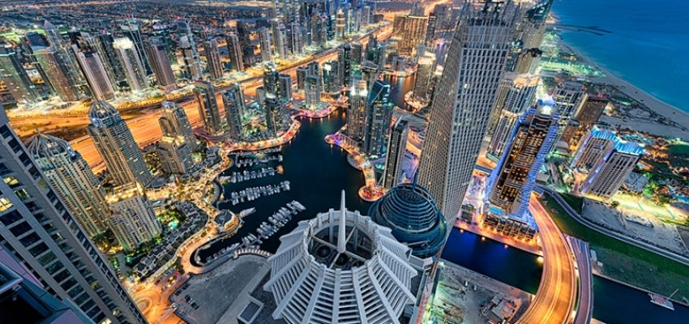
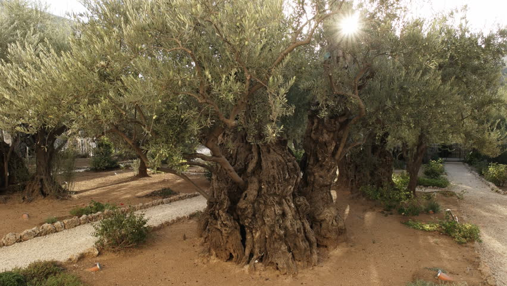
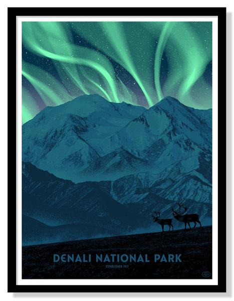
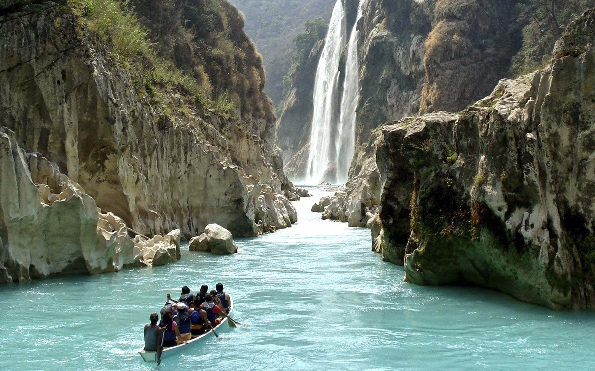
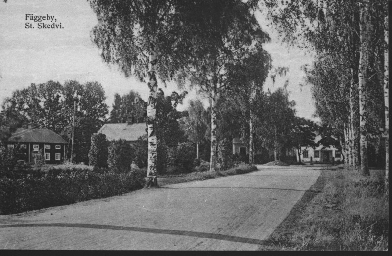

<html>
    <head>
        <title>ArcGIS Web Map (simple markers)</title>
        <style>
          html, body, #viewDiv {
            padding: 0;
            margin: 0;
            height: 100%;
          }
        </style>
        <link rel="stylesheet" href="https://js.arcgis.com/4.10/esri/css/main.css">
        <script src="https://js.arcgis.com/4.10/"></script>
        <script type="text/javascript">
            require(["esri/Map", "esri/views/MapView"], function(Map, MapView) { /*create function with Map and MapView as arguments*/
                const map = new Map({
                    basemap: "topo-vector"
                });
                const view = new MapView({
                    container: "viewDiv",
                    map: map,
                    zoom: 3,
                    center: {
                        longitude: -111.83400,
                        latitude: 33.29520}, //118.71511,34.09042
                    });
                view.graphics.add({ //Tarawa, Kiribati
                    symbol: {
                        type: "simple-marker",
                        color: "darkred",
                        },
                    geometry: {
                        type: "point",
                        longitude: 172.981004,
                        latitude: 1.439969
                      },
                    popupTemplate: {
                      title: "Tarawa, Kiribati",
                      content: "This is where my brother is currently serving his mission! It is one of the most remote places on earth. The highest point in the whole country (which consists of thousands of islands) is at a whopping elevation of 265.75 ft, which is on Banaba Island. The next highest elevation is on Phoenix Islands, at an elevation of 19.69ft. It is projected that the entire country will be completely submerged by water in about 50 years due to global warming. One mayor bought some land in a different location to provide his people a place to live when their home becomes a literal Atlantis!<br><br>"
                    }
                    });
                view.graphics.add({ //Kagoshima, Japan
                    symbol: {
                        type: "simple-marker",
                        color: "red",
                        },
                    geometry: {
                        type: "point",
                        longitude: 130.555043,
                        latitude: 31.590717
                        },
                    popupTemplate: {
                      title: "Tenmonkan Dori, Kagoshima, Japan",
                      content: "This is in one of my wife's areas on her mission. Tenmonkan Dori is a mall on the island of Kagoshima, Japan. My wife and I hope to save up and visit each of our missions for future anniversaries! Right now we're thinking Japan will in the 5-year range...<br>:)<br><br><br><br>"
                    }
                    });
                view.graphics.add({ //Bihar, India  [24.6975517,84.9947815]; #A04000
                    symbol: {
                        type: "simple-marker",
                        color: "#A04000",
                        },
                    geometry: {
                        type: "point",
                        longitude: 84.9947815,
                        latitude: 24.6975517
                        },
                    popupTemplate: {
                      title: "Mahabodhi Temple, Bodhgaya, Bihar, India",
                      content: "India is home to 17% of the entire earth's population. Some of the major religions in India are Hinduism, Islam, Buddhism, and Sikhism. Look at this cool temple!<br><br>"
                    }
                    });
                view.graphics.add({ //Dubai, UAE  [25.2048493,55.2707828]; #BA4A00
                    symbol: {
                        type: "simple-marker",
                        color: "#BA4A00",
                        },
                    geometry: {
                        type: "point",
                        longitude: 55.2707828,
                        latitude: 25.2048493
                        },
                    popupTemplate: {
                        title: "Dubai, United Arab Emirates",
                        content: "Many know Dubai to be the world's most ostentatious city in the world.<br><br><br><br>It is home to the world's tallest building, the Burj Khalifa (standing at 2716.54ft) and even sports a few manmade islands topped with multi-million dollar real estate.<br><br>Fun fact: 1 out of every 4 cranes in the world is in Dubai!<br><br>"
                    }
                    });
                view.graphics.add({ //Petra, Jordan [30.3243081,35.4450065]; #D35400
                    symbol: {
                        type: "simple-marker",
                        color: "#D35400",
                        },
                    geometry: {
                        type: "point",
                        longitude: 35.4450065,
                        latitude: 30.3243081
                        },
                    popupTemplate: {
                        title: "Petra, Uum Sayhoun, Jordan",
                        content: "Petra is one of the wonders of the world. It appears to be a whole city carved into the sides of a deep canyon. Its buildings consist of monuments, tombs, and sacred edifices.<br><br><br><br> According to some archaeologists Petra is referenced in the bible anytime the Edomites are referred to (for example, 2 Kings 14:7). It is located near where Aaron, the younger brother of Moses died.<br><br>"
                    }
                    });
                view.graphics.add({ //Jerusalem, Israel [31.7797151,35.2303857] #935116
                    symbol: {
                        type: "simple-marker",
                        color: "#935116",
                        },
                    geometry: {
                        type: "point",
                        longitude: 35.2303857,
                        latitude: 31.7797151
                        },
                    popupTemplate: {
                        title: "Gethsemane, Jerusalem, Israel",
                        content: "I've always wanted to visit this sacred place that is thought to be where our Savior performed the most important act that ever happened. Period. Olive trees are said to live hundreds and hundreds of years old, and some suggest some of the trees in this garden were probably alive when Jesus Christ took upon Him the pains and sins of the world.<br><br>"
                    }
                    });
                view.graphics.add({ //Denali, Alaska [63.0441394,-151.4073329] #AF601A
                    symbol: {
                        type: "simple-marker",
                        color: "#AF601A",
                        },
                    geometry: {
                        type: "point",
                        longitude: -151.4073329,
                        latitude: 63.0441394
                        },
                    popupTemplate: {
                        title: "Denali National Park and Reserve, Alaska",
                        content: "<br><br>Mt Denali is the tallest peak in the United States. Its summit stands at 20,310ft above sea level. This 3.85 mile tall mountain used to be called Mt McKinley. Part of the reason I want to visit Alaska (and specifically Mt Denali) is so I can witness the Northern Lights!!"
                    }
                    });
                view.graphics.add({ //Chiapas, Mexico [16.8411178,-92.9171735] #B03A2E
                    symbol: {
                        type: "simple-marker",
                        color: "#B03A2E",
                        },
                    geometry: {
                        type: "point",
                        longitude: -92.9171735,
                        latitude: 16.8411178
                        },
                    popupTemplate: {
                        title: "Cañón del Sumidero National Park, Chiapas, Mexico",
                        content: "I served my mission in the Villahermosa, México mission, which on the southern coast of the Gulf of Mexico and which borders Guatemala. There are numerous arquealogical sites in this region of the world. Though this beautiful canyon wasn't in the boundaries of my mission, it is not very far from it, and one of these times when I go back to visit my mission, I want to visit this place!<br><br>"
                    }
                    });
                view.graphics.add({ //Robanda, Tanzania [-1.8541654,34.0006702] #CB4335
                    symbol: {
                        type: "simple-marker",
                        color: "#CB4335",
                        },
                    geometry: {
                        type: "point",
                        longitude: 34.0006702,
                        latitude: -1.8541654
                        },
                    popupTemplate: {
                        title: "Serengeti National Park, Robanda, Tanzania",
                        content: "I've always thought it would be amazing to visit Africa. Up to this point in my life it seems like one of those distant lands that you know actually exists but in your head it still feels like it only appears in movies. The reason I chose this specific place in Africa is because it is where you can witness the Great Migration. The largest overland migration in the world.<br><br>"
                    }
                    });
                view.graphics.add({ //Fäggeby, Sweden [60.4262848,15.7726951]; #CA6F1E
                    symbol: {
                        type: "simple-marker",
                        color: "#CA6F1E",
                        },
                    geometry: {
                        type: "point",
                        longitude: 15.7726951,
                        latitude: 60.4262848
                        },
                    popupTemplate: {
                        title: "Fäggeby, Stora Skedvi, Kopparberg, Sweden",
                        content: "Fäggeby, Sweden is the birthplace to many of my anscestors. Two years ago, I took a Family History class, and for the final project I researched a family that lived in this area. I think it would be amazing to see where my anscestors are buried and to possibly find more records to help solve some family history mysteries.<br><br>"
                    }
                    });
                });
        </script>

    </head>
    <body>
        <div id="viewDiv"></div>
    </body>

</html>

<!--
Locations I want to visit:
Note: [latitude,longitude]
Tarawa, Kiribati [1.439969, 172.981004];
Tenmonkan Dori, Kagoshima, Japan [31.590717, 130.555043];
Mahabodhi Temple, Bodhgaya, Bihar, India  [24.6975517,84.9947815]; #A04000
Dubai, United Arab Emirates [25.2048493,55.2707828]; #BA4A00
Petra, Uum Sayhoun, Jordan [30.3243081,35.4450065]; #D35400
Gethsemane, Jerusalem, Israel [31.7797151,35.2303857]; #935116
Denali National Park and Reserve, Alaska [63.0441394,-151.4073329]; #AF601A
Cañón del Sumidero National Park, Chiapas, Mexico [16.8411178,-92.9171735]; #B03A2E
Serengeti National Park, Robanda, Tanzania [-1.8541654,34.0006702]; #CB4335
Fäggeby, Stora Skedvi, Kopparberg, Sweden [60.4262848,15.7726951]; #CA6F1E
-->
